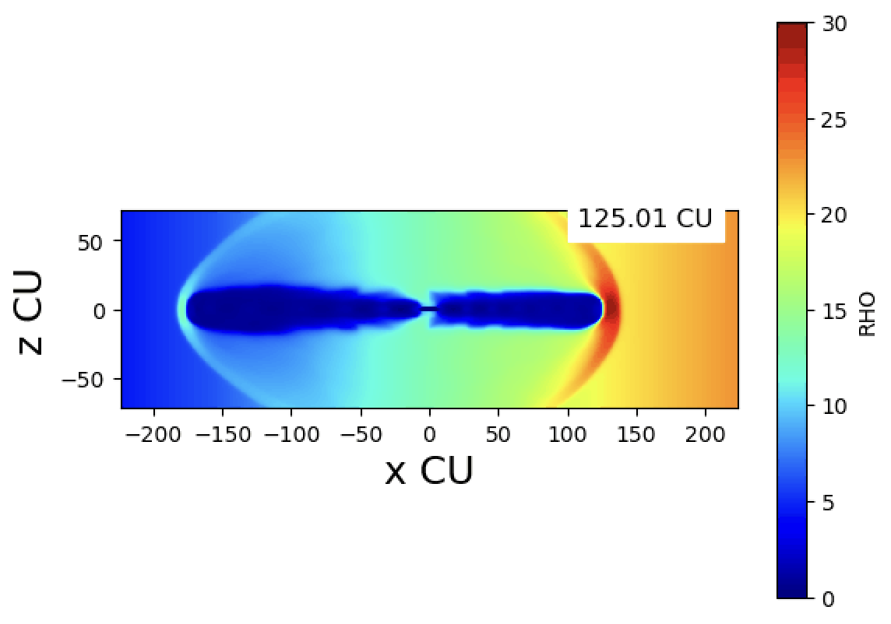

Simulating
radio galaxies.
Large-scale 3D magnetohydrodynamic simulations of radio-galaxy jets using the Fortran-based WOMBAT code, with Python workflows for analysis and visualization.

I'm a computer science student interested in software, research, and solving interesting problems.
I'm a Computer Science & Economics student at Gustavus Adolphus College. As an international student, I value the opportunity to represent where I come from while learning from the people and ideas around me.
I enjoy research, practical projects, new ideas, and experiences that give me something new to understand.
Research, data, software, and questions worth spending time on.
Large-scale 3D magnetohydrodynamic simulations of radio-galaxy jets using the Fortran-based WOMBAT code, with Python workflows for analysis and visualization.

Investigated how public datasets could help identify and predict national health trends, including work with Google Trends and Python projects using Spotify's API.
Gustavus Adolphus College
Computational simulations of radio galaxies, code development, and scientific visualization.
Ascola Alumni Program · Google IL
Public-data research, analytics, Python projects, and outreach to potential data providers.
Housing & Residential Life
Community building, events, engagement, policy, and support for campus residents.
04 / CURRENTLY
Learning across disciplines.
Building useful things.
Staying curious.